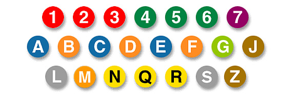
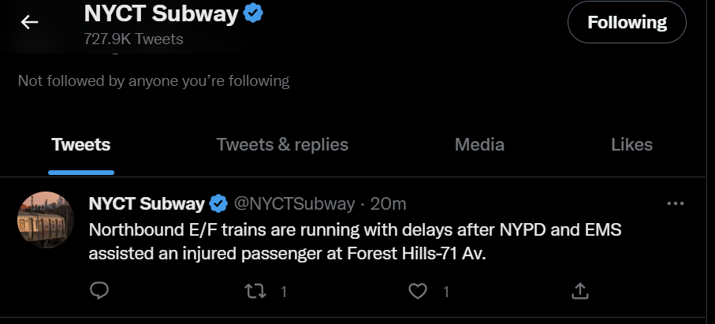
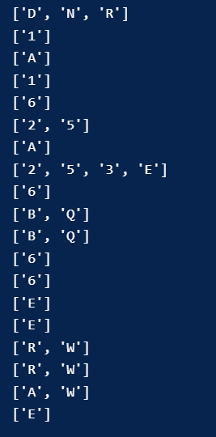
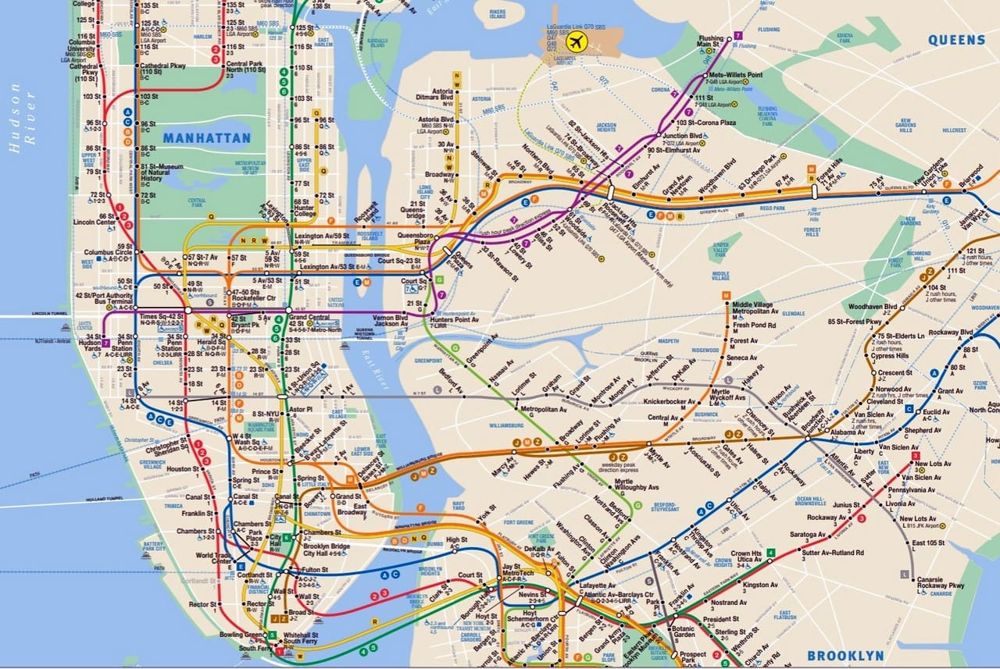

The notebook which contains the code for this section can be found here.
Introduction
Public transportation, and the NYC Subway in particular, is often plagued with delays and mishaps that hamper the travels of hundreds of thousands, if not millions of commuters daily. Additionally, a system of the scale of the NYC Subway is characterized by high complexity, with tons of interconnecting pieces, routes, and stations. A delay affecting one line may send reverberations across the system as a whole. For example, a broken down train on the E line at 7th Ave/50 st. in midtown can lead to delays in the B and D lines, which in turn affect the other lines that share their tracks (F,M,N,Q,R), which in turn can spread to the system as a whole. Additionally, planned diversions and track work can also have adverse impacts upon the transit system as a whole. Thus, it is important to analyze how delays for particular subway lines are associated with other lines, and a useful means as to addressing that goal is Association Rule Mining/Network Analysis.
The @NYCTSubway Twitter account tweets every time a delay is reported on the subway system, specifying all of the train routes that may be affected. An example tweet could be: "Brooklyn bound F and M trains are experiencing delays after a signal malfunction at 14th St." All line names on the NYC Subway are singular numbers or letters, and thus can be separated from the other words in a given tweet. These will be extracted from a large set of tweets gathered in the Data Gathering section of this project, primarily from September 2022-October 2022. The processing of these data will be covered more in depth later in this section. The data sets in question are multiple different queries of the Twitter API, and thus includes multiple files, which are stored here in the GitHub repository associated with this project.
What is Association Rule Mining and How Does It Work?
Association Rule Mining (ARM) is an unsupervised machine learning mechanism that looks for associations/connections between different features within a transactional database. Before explaining how ARM itself works, it is important to note what data is appropriate for ARM analysis. ARM analysis requires "transactional" data, which means that the data must consist of observations that each have a "basket" of features present for that observation. A prototypical example of transaction data would be lists of grocery store purchases. Each individual would be associated with a list of items they purchased, and inevitably some items will overlap between different individuals, and others will not. ARM analysis aims to analyze the significance and strength of overlaps/lack thereof. It is extremely important to note that the associations derived from ARM analysis are not indicative of an actual causal link. Even if we observe a large number of people buying, say, salt and pepper together, we cannot conclude from that information alone that there is a causal reason that those item are bought together, even if it seems intuitive.
The associations that ARM generate are known as "rules". These "rules" are essentially what features are often present together in many transactions. For example, one might find a rule two items are often bought together, however one must ask how does ARM analysis determine what connections are significant/insignificant? The three most notable means as to assessing the strength of potential rules are support, confidence, and lift. These three meausres all derive from concepts related to statistical independence (1).
Support is the most simple of the three metrics, and measures how often some number of items appear in the same transaction relative to all other transactions. For example, using the prior example about salt and pepper being purchased together, the support of that rule would be the number of purchases that contain both of those items divided by the total number of purchases in the data set. Confidence is a more specific measure, involving how often some number of items appear in the same transaction relative to all transactions containing one of those number of items. Regarding salt and pepper, the confidence for that rule would be the number of transactions that contain both salt and pepper divided by the number of all transactions that contain salt (at minimum). Finally, lift is the most complex of the three indicators of association strength, measuring the ratio of the support for the rule in question, divided by the product of the two sides of the given rule. Lift aims to quantify whether two sets of items for a rule are independent or not. If the ratio is equal to 1, then no association is observed between the items in question (for example, if salt and pepper were never in the same purchase within a given data set), and if the ratio is greater than/less than 1, then a positive and negative association is indicated respectively. For all of these measures, a higher value indicates a stronger positive association of a given rule.
Methods: Data Processing
|
The code that accomplishes all of the following tasks is attached at the top of this page. While there is not a traditional notion of transaction data that may be applied to an analysis of the NYC Subway (ticket sales for example are not public), we can use the tweets from the @NYCTSubway account to create a data set in the manner of a transactions data set. As mentioned in the introduction, the @NYCTSubway Twitter account posts about delays and planned work, among other incidents involving the NYC Subway system. All NYC Subway lines relevant to this analysis (i.e., not the Staten Island Railroad), are denoted by one capital letter or one number. An example tweet is additionally provided to the right. If this tweet were subject to the subsequent ARM analysis, it would be broken down from the full text seen to the right to merely a row containing the lines referenced, in this case "E","F". Each tweet serves as a "transaction", with each subway line referenced being a feature that may be associated/not associated with each tweet. If we saw "E" and "F" in a large number of tweets, it may form the basis for a strong rule indicating that E and F trains are often delayed at the same time according to an ARM analysis. Initially, these tweets were imported into python, and certain abnormal characters and strings (e.g., backslashes, URLs, etc.) are removed. Subequently, any lower case letters are also removed, as the letter subway lines on the NYC Subway are always capitalized (e.g., "a" is not the same as "A"). Then, each tweet was broken into its respective words, and any one letter length "words" that represent one of the NYC Subway lines was kept, and all other tweet content was dropped. The final step of this process was to remove any duplicate subway lines present within tweets. This is important as ARM can only function if features appear at most one time within each transaction. Finally, the set of tweets is ready to have ARM analysis applied to it. The first several sets of lines are pictured to the right as an example. |
(2)   |
{kind=link}
Results
The code that generates the plot below is attached at the top of this page. Some portions of that code is partially derived from other sources and is noted accordingly within the notebook attached at the top.
The network plot below displays the most significant rules as generated by the apriori algorithm applied to this data set. The apriori algorithm is a mechanism through which association rules are determined based on a few parameters that are user-defined. This algorithm uses minimum support and confidence thresholds to determine what rules count as "significant", or strong enough to be of note. There is no specific numeric guideline as to how to set these parameters ideally, but if these parameters are set too low, then the apriori algorithm would generate a huge number of "significant" rules, and the network plot would be an unreadable, jumbled mess. Setting these parameters too high raises the threshold which rules must exceed to be deemed "significant", which would make the network plot more simple, but may hide interesting associations. Ultimately, a minimum confidence and minimum support value of 0.0125 were chosen as to not overwhelm the graph with extraneous connections while still showing an interesting network of points.

From a cursory glance at the network plot above, one can see some relatively straightforward outcomes. As shown in the graphic displaying the different NYC subway lines, lines of the same color often run parallel and/or on the same tracks throughout much of their respective routes, and thus delays to one of these lines would often be associated with delays to all of them. For example, the N is connected with Q, R, and W, which are all yellow line trains that share tracks throughout a large portion of their routes.
Most interestingly, it appears that the apriori algorithm has generated two separate networks on top of one another, namely one for the letter lines, and one for the number lines. The 1,2,3,4,5, and 6 lines are all connected to at least one of each other, but none are connected with any letter lines, except 4 to W. This is not a surprising result, as there is only one station on the entire NYC Subway system (which has over 400 stations) where a number line train and letter line train even share the same platform, let alone the same tracks. Thus, it is understandable that there is a "mini-network" of sorts for the number lines separate from the letter lines. The 4 to W connection is a surprising find, considering that the 4 and W only share three stations where one can transfer between the two, and they are on separate platforms, so it is interesting to see those two lines be associated with one another.
Ultimately, beyond the connections of the W line to the 4 line, none of the results from this network plot are particularly surprising, as most of the other connections are between lines that either share track or run parallel to one another, and thus are dependent upon one another. It is understandable to see that delays/planned track work for one of these lines is associated with delays and other service changes among their nearby/accompanying lines.
Conclusions
|
So what may we conclude from this Association Rule Mining analysis of these tweets? The results of this analysis are not surprising with a few notable exceptions that were discussed above. When one line is delayed, then it appears as if the lines of the same color often experience delays at the same time, as reported by the @NYCTSubway twitter account. Addtionally, we saw that the number line trains and letter line trains are almost two separate systems within the overarching NYC Subway system, given by the (mostly) separate networks in the network graph above. The picture to the right is only a portion of the NYC Subway map, demonstrating its interconnectedness, and thus it is useful to understand how delays and service changes can reverberate throughout it. The information gathered in this ARM analysis can aid decisionmakers within the MTA to better address and alleviate delays and the adverse consequences of service changes. The MTA has limited resources to deal with delays, so it is necessary that their decisionmakers understand how the system is interconnected and how their decisions impact the system as a whole. Quantifying the strength of the associations between different lines, as performed in this section, can enable the MTA to understand which relationships between lines are most important, and thus they can dedicate their resources accordingly. |
 | (3)
References
1. Lutkevich, Ben. "association rules". TechTarget.com. https://www.techtarget.com/searchbusinessanalytics/definition/association-rules-in-data-mining
2. https://sarahgrand.files.wordpress.com/2012/08/subway_lines.jpg
3. https://www.nycinsiderguide.com/wp-content/uploads/2020/01/nyc-subway-map.jpg